ANIMALES EN PELIGRO DE EXTINCIÓN DEL 2022
Los animales en peligro de extinción, son las consecuencias que dejan las actividades del hombre con todas sus
actuaciones; ya que éstos son quienes han ido pagando las consecuencias de la destrucción del ecosistema; haciendo
que diversas especies vayan muriendo y con ello deteriorándoce de igual modo la cadena trófica de todos los seres.
Las diferentes especies de animales en peligro de extinción se estiman que desaparecerán del planeta
progresivamente, sin ninguna oportunidad futura de volver a reaparecer; puesto que quiénes están en
riesgo actual; están en constante zozobra según la perdida del hábitad donde se encuentran.
Además las actividades industriales llevadas a cabo por el hombre; los cambios climáticos, la caza y las
enfermedades, también tienen una gran participación en ir haciendo que las diferentes especies en peligro
vayan desapareciando de sus escocistemas paulatinamente.
Las consecuencias de los animales en peligro de extinción:
*Pérdida de diversidad génetica.
*Extinción completa de especies.
*Evolución humana.
*Rápida destrucción del ecosistema.
Lista de los animales en peligro de extinción
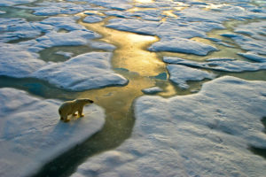
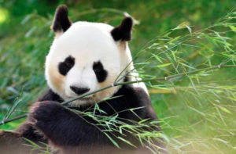
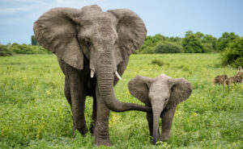
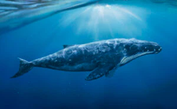
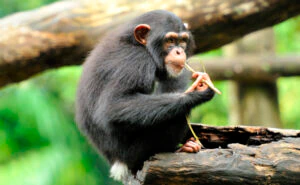
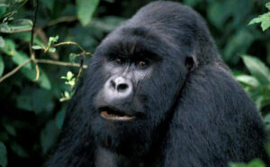
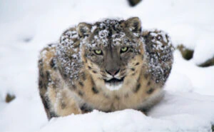
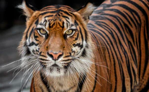
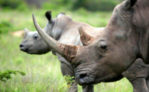
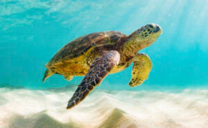
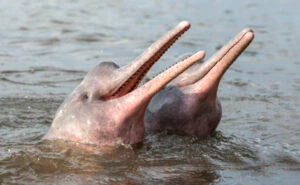
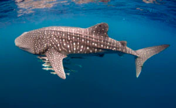